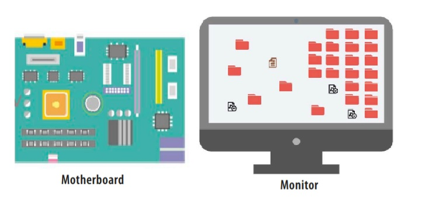

When talking about computers, people often refer to hardware, particularly in terms of upgrading or replacing it. Hardware combines with software to form a usable computing system.
 Hardware is everything in, or connected to, a computer that’s part of the physical world and can be touched. This includes the computer itself, with a screen, keyboard, and mouse. It also includes devices connected to a computer, such as speakers and memory cards. The computer’s internal components are considered hardware as well.